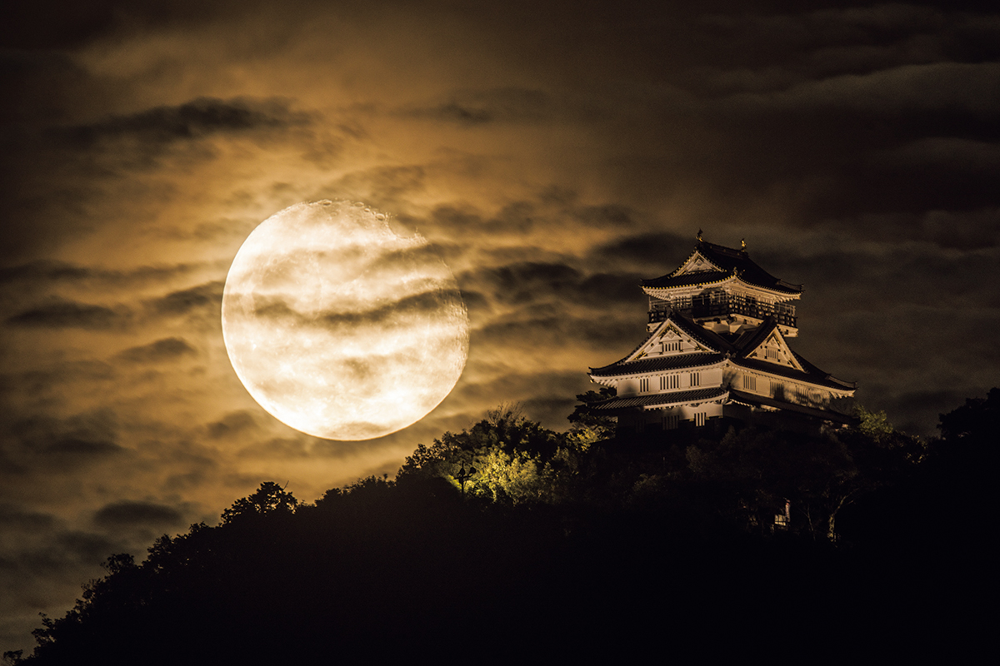
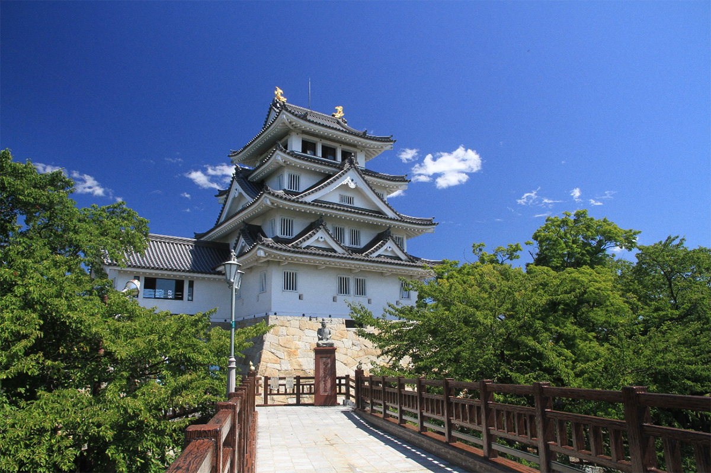
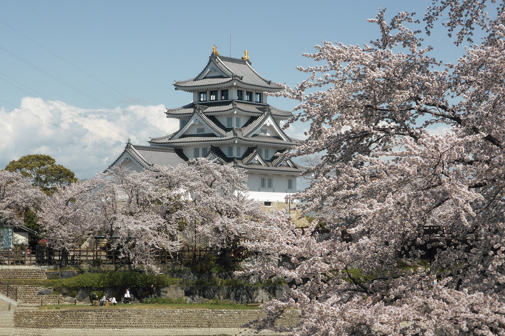
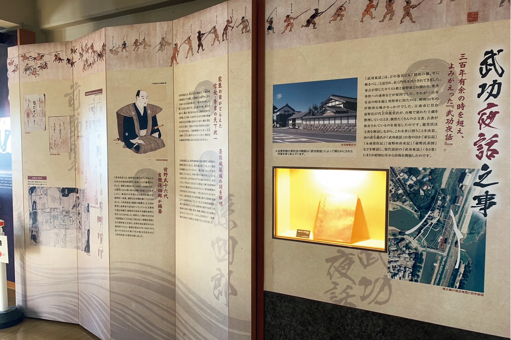
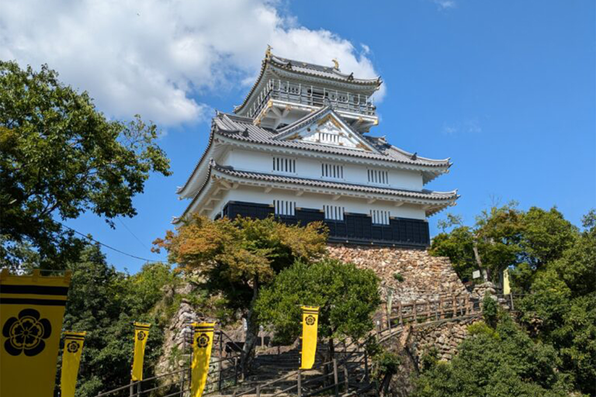
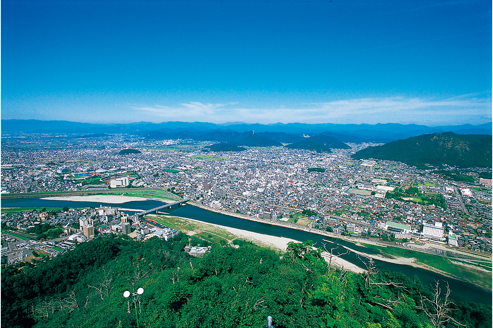
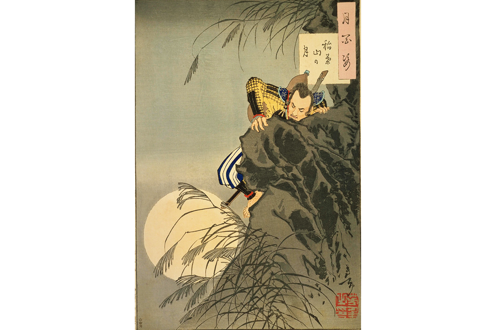

Префектура Гифу · Гифу и Огаки · история
Замок Гифу и «замок одной ночи» Суномата: два шага Нобунаги и Хидэёси к власти над страной

В 1566 году молодой Хидэёси, по легенде, построил крепость за одну ночь, а через год его господин Нобунага Ода взял главный замок провинции Мино и назвал его Гифу. Обе истории можно проследить на месте: в музее на берегу реки и в замке на вершине горы над городом.
Предыстория
Братья Тоётоми и провинция Мино
Хидэёси Тоётоми (1537–1598) прошёл путь от сына простолюдина до правителя всей Японии, и о нём написано и снято немало. В 2026 году в центре внимания оказался его младший брат Хидэнага Тоётоми (1540–1591): он стал главным героем большой исторической телесаги, тайга-драмы. Вслед за братьями по их биографии можно путешествовать от замка к замку, и два из них стоят в префектуре Гифу.
Обе истории связаны с одной военной кампанией. Нобунага Ода (1534–1582), князь из соседней провинции Овари, полководец, начавший объединение раздробленной страны, с 1561 года около шести лет воевал за провинцию Мино. Хидэёси служил у него под именем Токитиро Киносита и как раз в этой войне начал свой подъём.
1566
Суномата: крепость, выросшая за одну ночь
Задача, с которой не справились другие
Чтобы взять Мино, Нобунаге нужна была передовая база внутри владений противника, правителя Мино Тацуоки Сайто (1548–1573). Место выбрали в Суномате, но построить там крепость никак не удавалось. После нескольких неудач задание поручили Хидэёси.

Хидэёси привлёк на свою сторону людей с пограничья Овари и Мино во главе с Масакацу Хатисукой (1526–1586). В некоторых источниках их называют «каванами-сю», речными людьми. Позже Хатисука станет одним из самых верных соратников Хидэёси. План был такой: заранее обработать брёвна, сплавить их по реке сверху и на месте только собрать башни и опоры.
Противник, конечно, мешал. Но Хидэёси заранее разделил отряд, и часть воинов не подпускала врага к стройке. За ночь поставили внешнюю стену. Воины Сайто, увидев готовую стену, решили, что замок вырос за одну ночь, и растерялись. С этого, как говорят, поход на Мино пошёл намного быстрее.
Легенда и история
Рассказ о «замке одной ночи» записан в «Эхон Тайкоки», иллюстрированной биографии Хидэёси, в «Маэно-кэ мондзё», бумагах семьи Маэно, и в других текстах. Историки часто сомневаются в их надёжности, а саму историю иногда считают позднейшим вымыслом. Но и в таком виде это место считается отправной точкой карьеры Хидэёси, и сюда стоит заехать.

На месте крепости стоит исторический музей «Суномата итиядзё», то есть «Замок одной ночи в Суномате». Это исторический музей района Суномата города Огаки. Здание построили по образцу главной башни замка Огаки, на месте, где сходятся река Нагара и река Сайгава (когда-то главное русло реки Кисо). Внутри рассказывают историю Суноматы и показывают, как легенда о Хидэёси передавалась из поколения в поколение.

«Суномата итиядзё» (исторический музей Суномата)
- Адрес
- префектура Гифу, Огаки, Суномата-тё Суномата, 1742-1
- Телефон
- +81 584-62-3322
- Часы работы
- 9:00–17:00 (вход до 16:30)
- Выходные
- понедельник (если праздник, то следующий день), с 29 декабря по 3 января; в дни праздника сакуры (с конца марта по начало апреля) бывают дополнительные дни работы
- Цены / Вход
- 200 иен
- Сайт
- city.ogaki.lg.jp
1567
Замок Гифу: здесь прозвучало «Тэнка фубу»
Новое имя для старого замка
На горе Инабаяма стоял замок правителей Мино. Когда-то в нём правил Досан Сайто (ок. 1494–1556), который из простого торговца, как гласит предание, стал хозяином всей провинции. В 1567 году Нобунага завладел Мино, перенёс сюда свою ставку и дал замку и городу у его подножия новое имя: Гифу.
Здесь же он выбрал себе девиз из четырёх иероглифов «Тэнка фубу», «покорить Поднебесную силой оружия», и тем показал, что намерен установить свою власть над всей страной. Хидэёси шёл за ним и, отличаясь в новых походах, поднимался всё выше.

Гора Кинкадзан и вид на равнину
Гору Инабаяма называют также Кинкадзан, её высота 329 метров. Подняться можно пешком, но проще на канатной дороге. В восстановленной башне выставлены материалы о Нобунаге, Досане Сайто и других, и смотреть их интересно. С обзорной площадки на верхнем ярусе видна вся равнина Ноби, которую когда-то покорил Нобунага. Кажется, будто смотришь на неё его глазами.

Главная башня закрыта на ремонт с 19 мая 2026 года, по плану до конца октября 2027 года; канатная дорога на гору работает.
Дворец у подножия
У подножия горы стоял дворец Нобунаги. Португальский миссионер-иезуит Луис Фройс (1532–1597), побывавший здесь, назвал его «земным раем». Дворец служил Нобунаге резиденцией для приёма гостей. Зданий не сохранилось, но остались следы былой роскоши, например остатки сада, и часть из них открыта для посетителей. В 2026 году раскопки у дворца и на вершине горы продолжались.
Хидэёси и взятие Мино
Об участии самого Хидэёси во взятии Мино рассказывают биографии, составленные в эпоху Эдо, например «Тайкоки». В них описано много его подвигов: так, Хидэёси будто бы склонил на сторону Нобунаги владельца соседнего замка Унума и тем помог завоевать провинцию.

Замок Гифу, главная башня
- Адрес
- префектура Гифу, Гифу, Тэнсюкаку, 18
- Телефон
- +81 58-263-4853
- Часы работы
- 9:30–17:30 с 16 марта по 16 октября, 9:30–16:30 с 17 октября по 15 марта
- Выходные
- с 19 мая 2026 года до конца октября 2027 года (план) из-за ремонта
- Цены / Вход
- 200 иен
- Сайт
- city.gifu.lg.jp
Фото: замок Гифу, Управление образования города Огаки, Национальная парламентская библиотека Японии.